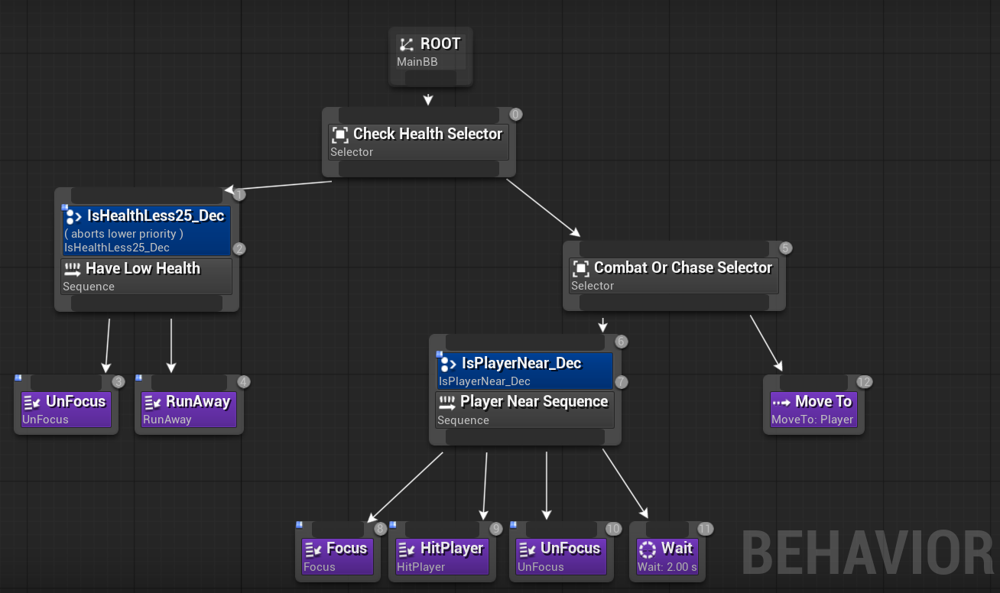
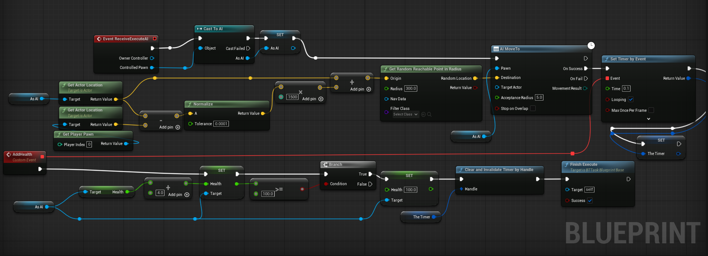

Dynamic decision making and state-driven enemy logic
This AI system features dynamic decision making based on health and proximity, utilizing Selectors and Decorators to fluidly switch between three primary states: Chase, Attack, and Flee.

IsHealthLess25_Dec Decorator is set to Low Priority Abort. If the AI's health drops below 25% at any point during combat, it immediately aborts current actions and enters the Flee state. It calculates a random reachable point far from the player, runs there, heals itself over time using a Timer, and then resumes combat once fully recovered.IsPlayerNear_Dec Decorator to evaluate the distance to the target player.Move To task, navigating the environment to close the distance to the player.Player Near Sequence is executed. The AI focuses on the player (adjusting Yaw), executes the HitPlayer Task (playing the attack montage), unfocuses to allow free movement, and waits for a brief cooldown period before assessing the next move.